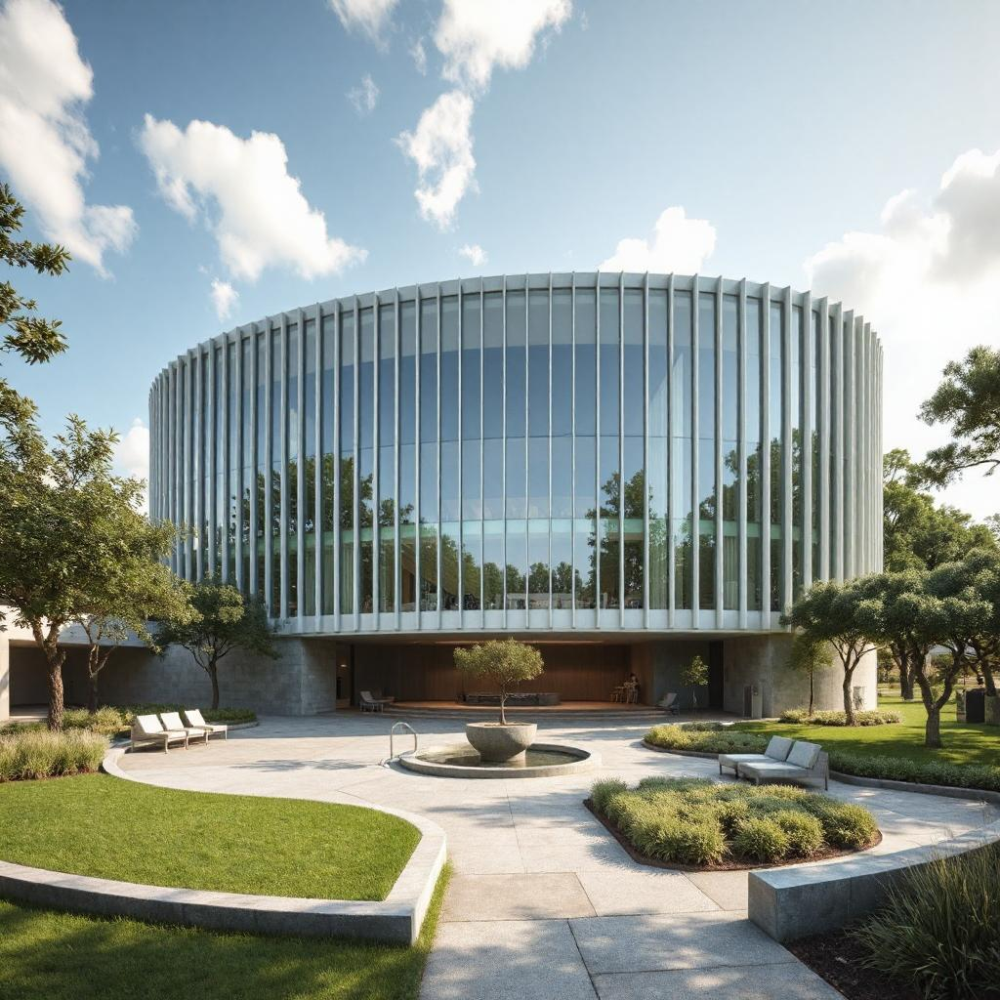
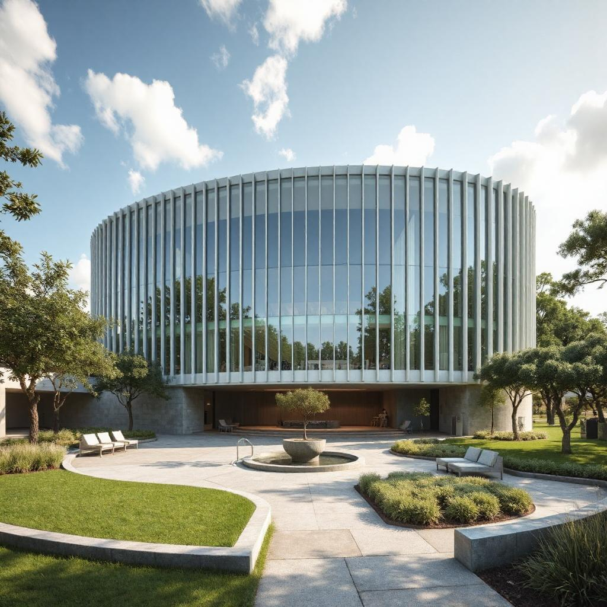

Home
Welcome to Marcus Elam Corporation
Contact
If you have any questions, feel free to email us.
 



Your one-stop destination for amazing content
Welcome to Marcus Elam Corporation
If you have any questions, feel free to email us.